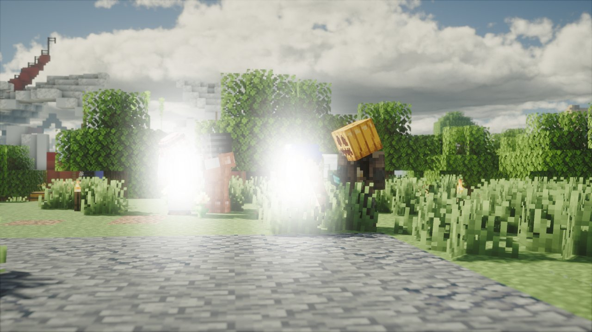

Quatre otages, un échange tendu : les révolutionnaires libèrent Leonhart et Martinez
Alors que la communauté pensait souffler après la capture d'Alan Leonhart et David Martinez, les révolutionnaires ont frappé un grand coup. Couvre-feu, négociations éprouvantes, otages récompensés — une journée qui a paralysé Karminéa.

Alors que la communauté pensait souffler après la capture d'Alan Leonhart et David Martinez, les révolutionnaires ont frappé un grand coup : une prise d'otage soigneusement orchestrée, avec un seul objectif — obtenir la libération de leurs deux figures emblématiques.
Une ville sous tension, un couvre-feu annoncé
Le président a pris la parole pour confirmer les faits : des révolutionnaires ont pris des civils en otage dans le but d'obtenir la libération d'Alan Leonhart et David Martinez. Face à la gravité de la situation, le président a annoncé la mise en place d'un couvre-feu sur l'ensemble du territoire. Le message était clair : la ville n'était plus sûre, et les citoyens devaient se mettre à l'abri.
Un dispositif habile pour éviter un piège
Du côté des révolutionnaires, l'opération a été menée avec méthode. Sur les quatre otages retenus, deux ont été amenés sur le terrain de l'échange, tandis que les deux autres étaient gardés en captivité dans un lieu tenu secret. Cette stratégie visait à éviter un piège tendu par la police lors de l'échange — une précaution qui montre que les révolutionnaires avaient anticipé les réactions des autorités.

Des otages coopératifs récompensés
David Martinez, porte-parole du groupe, a tenu à préciser la position des révolutionnaires : aucun otage n'a été blessé. Les révolutionnaires affirment avoir horreur de la violence gratuite envers des civils innocents. Les deux otages jugés les plus coopératifs ont même reçu une compensation financière pour le désagrément subi.
Des négociations sous haute tension
L'échange ne s'est pas fait sans difficulté. Les négociations ont été décrites comme particulièrement compliquées, les politiques, gardes et policiers s'étant montrés fermes et peu enclins à relâcher les prisonniers. Le bras de fer a duré, les positions sont restées tranchées de part et d'autre. Finalement, l'échange a eu lieu : Alan Leonhart et David Martinez ont été libérés contre la remise en liberté des quatre otages.
La position des révolutionnaires
David Martinez a tenu à rappeler les valeurs de son mouvement à l'issue de l'opération :
"La révolution n'a pas pour but de faire du mal aux civils. La violence, lorsqu'elle est rarement utilisée, ne l'est que sur les personnes responsables."
— David Martinez
Ce que cet épisode révèle
La libération d'Alan Leonhart et David Martinez par leurs propres partisans montre que la coalition révolutionnaire est loin d'être neutralisée. Organisée, déterminée et capable de frapper au moment où on l'attend le moins, elle reste une force avec laquelle les institutions vont devoir composer. Le couvre-feu levé, les questions restent entières : que va faire Leonhart maintenant qu'il est libre ? La ville a-t-elle les moyens d'assurer la sécurité de ses citoyens ?
"Une journée sous haute tension, des négociations éprouvantes et une ville encore marquée par ces événements. À Karminéa, les conséquences de cette affaire restent à mesurer."
— La Rédaction